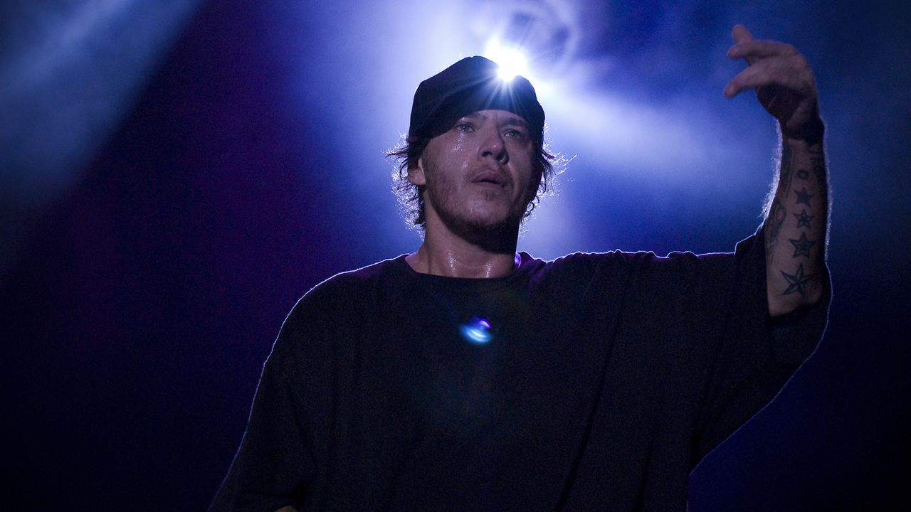
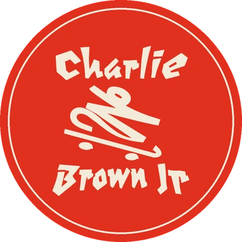
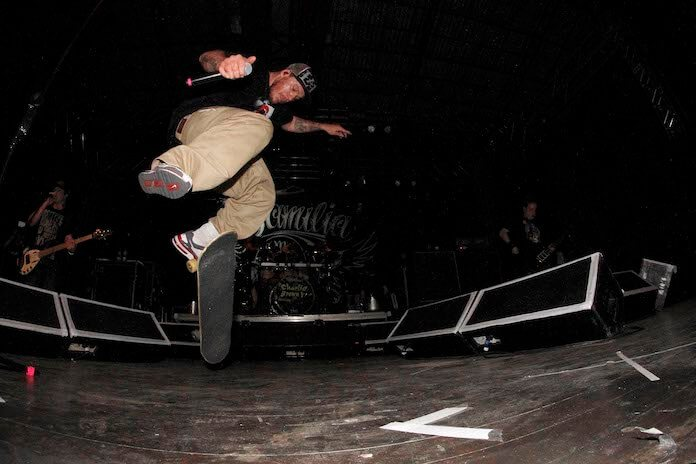

Charlie Brown Jr. · Santos, SP
Chorão Eterno
Antes do microfone, havia o skate. Uma homenagem ao vocalista que levou a rua, a prancha e o rock de Santos para o Brasil inteiro.

01
A origem
do apelido

“Pô, não chora,
anda de skate.”
O próprio Chorão explicou: o apelido vem do seu passado como atleta de skateboarding.
A galera do skate sempre bota apelidos e tal, e eu era meio tímido, ficava só olhando.
Então, passou um cara um dia e falou, ‘Pô, não chora, anda de skate’. Aí passou outro,
‘Não chora, anda de skate’.
O “não chora” virou Chorão.
02
A jukebox
dos sucessos
12 músicas que todo mundo canta junto, de 1997 a 2011. Toque aqui no player oficial do Spotify ou abra no app que você usa.
12 faixas
- 01 Proibida pra Mim (Grazon) Faixa do disco de estreia, de 1997. Spotify YT Music
- 02 Zóio de Lula Single lançado em abril de 1999. Spotify YT Music
- 03 Te Levar Single de julho de 1999. Spotify YT Music
- 04 Lugar ao Sol Primeiro single de Abalando a Sua Fábrica, escrito por Chorão. Spotify YT Music
- 05 Como Tudo Deve Ser Terceiro single do disco; regravada no Acústico MTV. Spotify YT Music
- 06 Papo Reto (Prazer É Sexo, o Resto É Negócio) Single de dezembro de 2002. Spotify YT Music
- 07 Ela Vai Voltar (Todos os Defeitos de uma Mulher Perfeita) Single de março de 2006. Spotify YT Music
- 08 Senhor do Tempo Single de agosto de 2006. Spotify YT Music
- 09 Dias de Luta, Dias de Glória Composição de Chorão e Thiago Castanho, lançada como single em 2006. Spotify YT Music
- 10 Pontes Indestrutíveis Faixa de Ritmo, Ritual e Responsa, de 2007. Spotify YT Music
- 11 Só os Loucos Sabem Segundo single de Camisa 10, composto por Chorão e Thiago Castanho. Spotify YT Music
- 12 Céu Azul Mostrada num webclipe em março de 2011 e lançada como single em dezembro. Spotify YT Music
Nada por aqui. Tente outro nome — ou veja a discografia completa no Spotify ↗
03
Na prateleira
De 1997 a 2013, em ordem. Escolha um disco para ver a história e as faixas dele que estão na jukebox.
-
Estúdio · 1997
Transpiração Contínua Prolongada
A estreia. Foi daqui que saiu “Proibida pra Mim (Grazon)”.
-
Estúdio · 1999
Preço Curto... Prazo Longo
Lançado em 6 de março de 1999, com 25 faixas. Rendeu Disco de Platina.
-
Estúdio · 2000
Nadando com os Tubarões
Terceiro disco. Depois dele, o guitarrista Thiago Castanho deixou a banda, em 2001.
-
Estúdio · 2001
100% Charlie Brown Jr. — Abalando a Sua Fábrica
O disco de “Lugar ao Sol” e “Como Tudo Deve Ser”.
-
Estúdio · 2002
Bocas Ordinárias
Trouxe “Papo Reto (Prazer É Sexo, o Resto É Negócio)”, single de dezembro de 2002.
-
Ao vivo · 2003
Acústico MTV
Registro acústico em que a banda regravou “Como Tudo Deve Ser”.
-
Estúdio · 2004
Tamo Aí na Atividade
Lançado em dezembro de 2004 pela EMI.
-
Estúdio · 2005
Imunidade Musical
Lançado em 23 de agosto de 2005, produzido por Rick Bonadio. Primeiro disco com a nova formação.
-
Estúdio · 2007
Ritmo, Ritual e Responsa
O disco de “Pontes Indestrutíveis”.
-
Estúdio · 2009
Camisa 10 Joga Bola Até na Chuva
Lançado em setembro de 2009 pela Sony Music. Primeiro disco com o baterista Bruno Graveto.
-
Ao vivo · 2012
Música Popular Caiçara
CD e DVD ao vivo gravado em Santos e Curitiba. “Céu Azul” é a única faixa de estúdio.
-
Estúdio · 2013
La Familia 013
Último álbum de estúdio, lançado em 8 de outubro de 2013 pela Som Livre.
04
Linha
do tempo
Os momentos que marcaram a banda, de Santos ao último disco.
-
1992
Santos
Nasce em Santos (SP) o Charlie Brown Jr. Formação original: Chorão, Champignon, Marcão, Thiago Castanho e Renato Pelado.
-
1997
Estreia
Sai Transpiração Contínua Prolongada, com “Proibida pra Mim (Grazon)”.
-
1999
Platina
Preço Curto... Prazo Longo chega em março, com “Zóio de Lula” e “Te Levar”, e vira Disco de Platina.
-
2001
Abalando
100% Charlie Brown Jr. — Abalando a Sua Fábrica traz “Lugar ao Sol”. No mesmo ano, Thiago Castanho deixa a banda.
-
2003
Acústico
O Acústico MTV regrava “Como Tudo Deve Ser”.
-
2005
Virada
Marcão, Champignon e Pelado saem. Com Thiago Castanho de volta, Heitor Gomes no baixo e Pinguim na bateria, sai Imunidade Musical.
-
2009
Camisa 10
Camisa 10 Joga Bola Até na Chuva sai pela Sony Music; em 2010, “Só os Loucos Sabem” vira single.
-
2011
Reencontro
Marcão e Champignon voltam. Em 19 de março, a banda grava o show Chegou Quem Faltava em São Paulo. Em dezembro, sai “Céu Azul”.
-
2013
Eterno
Chorão morre em 6 de março, em São Paulo. Em outubro sai La Familia 013, o último disco de estúdio. Champignon morre no mesmo ano.
-
2021
Inédito
O show Chegou Quem Faltava, gravado dez anos antes, finalmente é lançado em disco.
Lado B
Você
sabia?
Curiosidades sobre os discos e a banda, cada uma com sua fonte.
“Preço Curto... Prazo Longo” tem 25 faixas — e rendeu Disco de Platina à banda.
Em 2001, Thiago Castanho deixou a banda dizendo estar “cansado da vida na estrada”. Voltou para gravar Imunidade Musical, em 2005.
“Só os Loucos Sabem”, “Dias de Luta, Dias de Glória” e “Céu Azul” são parcerias de Chorão com o guitarrista Thiago Castanho.
“Céu Azul” apareceu primeiro num webclipe, em março de 2011. Depois virou a única faixa de estúdio do CD e DVD ao vivo Música Popular Caiçara.
O show “Chegou Quem Faltava” foi gravado em 19 de março de 2011, no Citibank Hall, em São Paulo. O disco só saiu em 2021.
Na volta de Marcão e Champignon, em 2011, a banda ficou quase com a formação original. Só faltava o baterista Renato Pelado.
“Como Tudo Deve Ser” foi o terceiro single de Abalando a Sua Fábrica e ganhou nova gravação no Acústico MTV, de 2003.
Camisa 10 Joga Bola Até na Chuva foi o primeiro disco do Charlie Brown Jr. com o baterista Bruno Graveto.
Dois sucessos têm subtítulo: “Ela Vai Voltar (Todos os Defeitos de uma Mulher Perfeita)” e “Papo Reto (Prazer É Sexo, o Resto É Negócio)”.
01 / 09
05
A banda
Quatro nomes que ficaram. Toque em cada um para ler a história completa na Wikipédia. A formação original também tinha Renato Pelado na bateria.